Chapter 4: Book IV. Inscription and Circumscription of Triangles and of Regular Polygons in and About Circles¶
4.1 Book IV. Inscription and Circumscription of Triangles and of Regular Polygons in and About Circles¶
________________
DEFINITIONS.
i. If two rectilineal figures be so related that the angular points of one lie on the sides of the other—1, the former is said to be inscribed in the latter; 2, the latter is said to be described about the former.
ii. A rectilineal figure is said to be inscribed in a circle when its angular points are on the circumference. Reciprocally, a rectilineal figure is said to be circumscribed to a circle when each side touches the circle.
iii. A circle is said to be inscribed in a rectilineal figure when it touches each side of the figure. Reciprocally, a circle is said to be circumscribed to a rectilineal figure when it passes through each angular point of the figure.
iv. A rectilineal figure which is both equilateral and equiangular is said to be regular.
Observation.—The following summary of the contents of the Fourth Book will assist the student in remembering it:—
1. It contains sixteen Propositions, of which four relate to triangles, four to squares, four to pentagons, and four miscellaneous Propositions.
2. Of the four Propositions occupied with triangles—
(α) One is to inscribe a triangle in a circle.
(β) Its reciprocal, to describe a triangle about a circle.
(γ) To inscribe a circle in a triangle.
(δ) Its reciprocal, to describe a circle about a triangle.
3. If we substitute in (α), (β), (γ), (δ) squares for triangles, and pentagons for triangles, we have the problems for squares and pentagons respectively.
4. Every Proposition in the fourth Book is a problem.
PROP. I.—Problem.
In a given circle (ABC) to place a chord equal to a given line (D) not greater than the diameter.
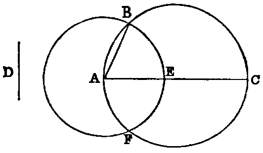
Sol.—Draw any diameter AC of the circle; then, if AC be equal to D, the thing required is done; if not, from AC cut off the part AE equal to D [I. iii.]; and with A as centre and AE as radius, describe the circle EBF, cutting the circle ABC in the points B, F. Join AB. Then AB is the chord required.
Dem.—Because A is the centre of the circle EBF, AB is equal to AE [I. Def. xxxii.]; but AE is equal to D (const.); therefore AB is equal to D.
PROP. II.—Problem.
In a given circle (ABC) to inscribe a triangle equiangular to a given triangle (DEF).
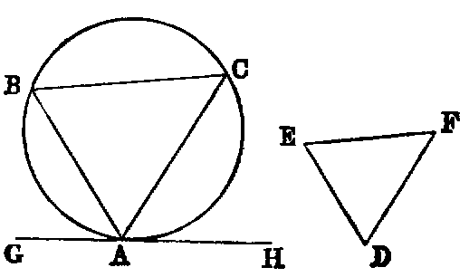
Sol.—Take any point A in the circumference, and at it draw the tangent GH; then make the angle HAC equal to E, and GAB equal to F [I. xxiii.] Join BC. ABC is a triangle fulfilling the required conditions.
Dem.—The angle E is equal to HAC (const.), and HAC is equal to the angle ABC in the alternate segment [III. xxxii.]. Hence the angle E is equal to ABC. In like manner the angle F is equal to ACB. Therefore [I. xxxii.] the remaining angle D is equal to BAC. Hence the triangle ABC inscribed in the given circle is equiangular to DEF.
PROP. III.—Problem.
About a given circle (ABC) to describe a triangle equiangular to a given triangle (DEF).
Sol.—Produce any side DE of the given triangle both ways to G and H, and from the centre O of the circle draw any radius OA; make the angle AOB equal to GEF [I. xxiii.], and the angle AOC equal to HDF. At the points A, B, C draw the tangents LM, MN, NL to the given circle. LMN is a triangle fulfilling the required conditions.
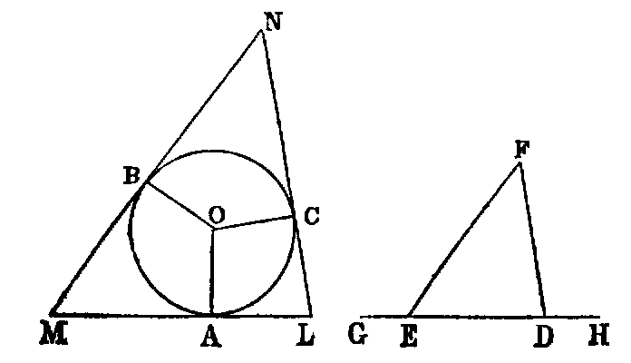
Dem.—Because AM touches the circle at A, the angle OAM is right. In like manner, the angle MBO is right; but the sum of the four angles of the quadrilateral OAMB is equal to four right angles. Therefore the sum of the two remaining angles AOB, AMB is two right angles; and [I. xiii.] the sum of the two angles GEF, FED is two right angles. Therefore the sum of AOB, AMB is equal to the sum of GEF, FED; but AOB is equal to GEF (const.). Hence AMB is equal to FED. In like manner, ALC is equal to EDF; therefore [I. xxxii.] the remaining angle BNC is equal to DFE. Hence the triangle LMN is equiangular to DEF.
PROP. IV.—Problem.
To inscribe a circle in a given triangle (ABC).
Sol.—Bisect any two angles A, B of the given triangle by the lines AO, BO; then O, their point of intersection, is the centre of the required circle.
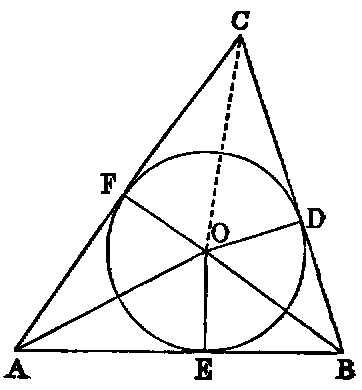
Dem.—From O let fall the perpendiculars OD, OE, OF on the sides of the triangle. Now, in the triangles OAE, OAF the angle OAE is equal to OAF (const.), and the angle AEO equal to AFO, because each is right, and the side OA common. Hence [I. xxvi.] the side OE is equal to OF. In like manner OD is equal to OF; therefore the three lines OD, OE, OF are all equal. And the circle described with O as centre and OD as radius will pass through the points E, F; and since the angles D, E, F are right, it will [III. xvi.] touch the three sides of the triangle ABC; and therefore the circle DEF is inscribed in the triangle ABC.
Exercises.
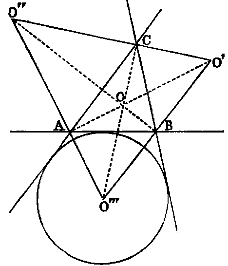
1. If the points O, C be joined, the angle C is bisected. Hence “the bisectors of the angles of a triangle are concurrent” (compare I. xxvi., Ex. 7).
2. If the sides BC, CA, AB of the triangle ABC be denoted by a, b, c, and half their sum by s, the distances of the vertices A, B, C of the triangle from the points of contact of the inscribed circle are respectively s − a, s − b, s − c.
3. If the external angles of the triangle ABC be bisected as in the annexed diagram, the three angular points O′, O′′, O′′′, of the triangle formed by the three bisectors will be the centres of three circles, each touching one side externally, and the other two produced. These three circles are called the escribed circles of the triangle ABC.
4. The distances of the vertices A, B, C from the points of contact of the escribed circle which touches AB externally are s − b, s − a, s.
5. The centre of the inscribed circle, the centre of each escribed circle, and two of the angular points of the triangle, are concyclic. Also any two of the escribed centres are concyclic with the corresponding two of the angular points of the triangle.
6. Of the four points O, O′, O′′, O′′′, any one is the orthocentre of the triangle formed by the remaining three.
7. The three triangles BCO′, CAO′′, ABO′′′ are equiangular.
8. The rectangle CO.CO′′′ = ab; AO.AO′ = bc; BO.BO′′ = ca.
9. Since the whole triangle ABC is made up of the three triangles AOB, BOC, COA, we see that the rectangle contained by the sum of the three sides, and the radius of the inscribed circle, is equal to twice the area of the triangle. Hence, if r denote the radius of the inscribed circle, rs = area of the triangle.
10. If r′ denote the radius of the escribed circle which touches the side a externally, it may be shown in like manner that r′(s − a) = area of the triangle.
11. rr′ = s − b.s − c.
12. Square of area = s.s − a.s − b.s − c.
13. Square of area = r.r′.r′′.r′′′.
14. If the triangle ABC be right-angled, having the angle C right,
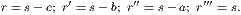
15. Given the base of a triangle, the vertical angle, and the radius of the inscribed, or any of the escribed circles: construct it.
PROP. V.—Problem.
To describe a circle about a given triangle (ABC).
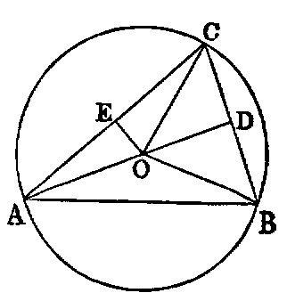
Sol.—Bisect any two sides BC, AC in the points D, E. Erect DO, EO at right angles to BC, CA; then O, the point of intersection of the perpendiculars, is the centre of the required circle.
Dem.—Join OA, OB, OC. The triangles BDO, CDO have the side BD equal CD (const.), and DO common, and the angle BDO equal to the angle CDO, because each is right. Hence [I. iv.] BO is equal to OC. In like manner AO is equal to OC. Therefore the three lines AO, BO, CO are equal, and the circle described with O as centre, and OA as radius, will pass through the points A, B, C, and be described about the triangle ABC.
Cor. 1.—Since the perpendicular from O on AB bisects it [III. iii.], we see that the perpendiculars at the middle points of the sides of a triangle are concurrent.
Def.—The circle ABC is called the circumcircle, its radius the circumradius, and its centre the circumcentre of the triangle.
Exercises.
1. The three perpendiculars of a triangle (ABC) are concurrent.
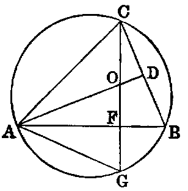
Dem.—Describe a circle about the triangle. Let fall the perpendicular CF. Produce CF to meet the circle in G. Make FO = FG. Join AG, AO. Produce AO to meet BC in D. Then the triangles GFA, OFA have the sides GF, FA in one equal to the sides OF, FA in the other, and the contained angles equal. Hence [I. iv.] the angle GAF equal OAF; but GAF = GCB [III. xxi.]; hence OAF = OCD, and FOA = DOC; hence OFA = ODC; but OFA is right, hence ODC is right. In like manner, if BO be joined to meet AC in E, BE will be perpendicular to AC. Hence the three perpendiculars pass through O, and are concurrent. This Proposition may be proved simply as follows:—
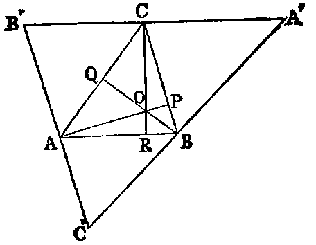
Draw parallels to the sides of the original triangle ABC through its vertices, forming a new triangle A′B′C′ described about ABC; then the three perpendiculars at the middle points of the sides of A′B′C′ are concurrent [v. Cor. 1], and these are evidently the perpendiculars from the vertices on the opposite sides of the triangle ABC (compare Ex. 16, Book I.).
Def.—The point O is called the orthocentre of the triangle ABC.
2. The three rectangles OA.OP, OB.OQ, OC.OR are equal.
Def.—The circle round O as centre, the square of whose radius is equal OA.OP = OB.OQ = OC.OR, is called the polar circle of the triangle ABC.
Observation.—If the orthocentre of the triangle ABC be within the triangle, the rectangles OA.OP, OB.OQ, OC.OR are negative, because the lines OA.OP, &c., are measured in opposite directions, and have contrary signs; hence the polar circle is imaginary; but it is real when the point O is without the triangle—that is, when the triangle has an obtuse angle.
3. If the perpendiculars of a triangle be produced to meet the circumscribed circle, the intercepts between the orthocentre and the circle are bisected by the sides of the triangle.
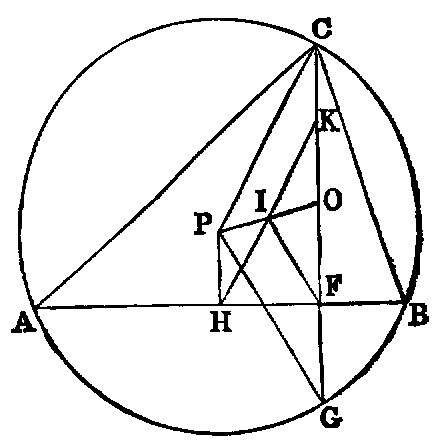
4. The point of bisection (I) of the line (OP) joining the orthocentre (O) to the circumference (P) of any triangle is equally distant from the feet of the perpendiculars, from the middle points of the sides, and from the middle points of the distances of the vertices from the orthocentre.
Dem.—Draw the perpendicular PH; then, since OF, PH are perpendiculars on AB, and OP is bisected in I, it is easy to see that IH = IF. Again, since OP, OG are bisected in I, F; IF = PG—that is, IF = the radius. Hence the distance of I from the foot of each perpendicular, and from the middle point of each side, is = the radius. In like manner, if OC be bisected in K, then IK = the radius. Hence we have the following theorem:—The nine points made up of the feet of the perpendiculars, the middle points of the sides, and the middle points of the lines from the vertices to the orthocentre, are concyclic.
Def.—The circle through these nine points is called the “nine points circle” of the triangle.
5. The circumcircle of a triangle is the “nine points circle” of each of the four triangles formed by joining the centres of the inscribed and escribed circles.
6. The distances between the vertices of a triangle and its orthocentre are respectively the doubles of the perpendiculars from the circumcentre on the sides.
7. The radius of the “nine points circle” of a triangle is equal to half its circumradius.
PROP. VI.—Problem.
In a given circle (ABCD) to inscribe a square.
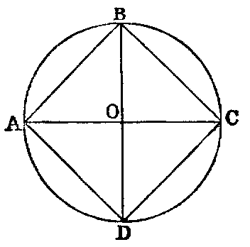
Sol.—Draw any two diameters AC, BD at right angles to each other. Join AB, BC, CD, DA. ABCD is a square.
Dem.—Let O be the centre. Then the four angles at O, being right angles, are equal. Hence the arcs on which they stand are equal [III. xxvi.], and hence the four chords are equal [III. xxix.]. Therefore the figure ABCD is equilateral.
Again, because AC is a diameter, the angle ABC is right [III. xxxi.]. In like manner the remaining angles are right. Hence ABCD is a square.
PROP. VII.—Problem.
About a given circle (ABCD) to describe a square.
Sol.—Through the centre O draw any two diameters at right angles to each other, and draw at the points A, B, C, D the lines HE, EF, FG, GH touching the circle. EFGH is a square.
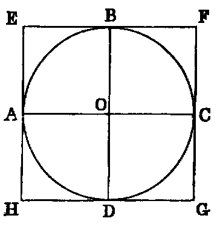
Dem.—Because AE touches the circle at A, the angle EAO is right [III. xviii.], and therefore equal to BOC, which is right (const.). Hence AE is parallel to OB. In like manner EB is parallel to AO; and since AO is equal to OB, the figure AOBE is a lozenge, and the angle AOB is right; hence AOBE is a square. In like manner each of the figures BC, CD, DA is a square. Hence the whole figure is a square.
Cor.—The circumscribed square is double of the inscribed square.
PROP. VIII.—Problem.
In a given square (ABCD) to inscribe a circle.
Sol.—Bisect (see last diagram) two adjacent sides EH, EF in the points A, B, and through A, B draw the lines AC, BD, respectively parallel to EF, EH; then O, the point of intersection of these parallels, is the centre of the required circle.
Dem.—Because AOBE is a parallelogram, its opposite sides are equal; therefore AO is equal to EB; but EB is half the side of the given square; therefore AO is equal to half the side of the given square; and so in like manner is each of the lines OB, OC, OD; therefore the four lines OA, OB, OC, OD are all equal; and since they are perpendicular to the sides of the given square, the circle described with O as centre, and OA as radius, will be inscribed in the square.
PROP. IX.—Problem.
About a given square (ABCD) to describe a circle.
Sol.—Draw the diagonals AC, BD intersecting in O (see diagram to Proposition vi.). O is the centre of the required circle.
Dem.—Since ABC is an isosceles triangle, and the angle B is right, each of the other angles is half a right angle; therefore BAO is half a right angle. In like manner ABO is half a right angle; hence the angle BAO equal ABO; therefore [I. vi.] AO is equal to OB. In like manner OB is equal to OC, and OC to OD. Hence the circle described, with O as centre and OA as radius, will pass through the points B, C, D, and be described about the square.
PROP. X.—Problem.
To construct an isosceles triangle having each base angle double the vertical angle.
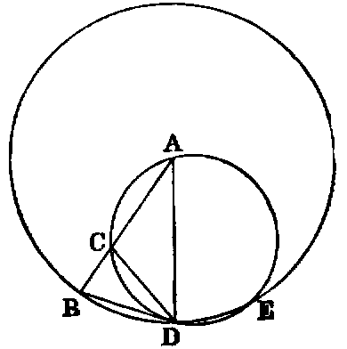
Sol.—Take any line AB. Divide it in C, so that the rectangle AB.BC shall be equal to AC2 [II. xi.]. With A as centre, and AB as radius, describe the circle BDE, and in it place the chord BD equal to AC [i.]. Join AD. ADB is a triangle fulfilling the required conditions.
Dem.—Join CD. About the triangle ACD describe the circle CDE [v.]. Then, because the rectangle AB.BC is equal to AC2 (const.), and that AC is equal to BD (const.); therefore the rectangle AB.BC is equal to BD2. Hence [III. xxxvii.] BD touches the circle ACD. Hence the angle BDC is equal to the angle A in the alternate segment [III. xxxii.]. To each add CDA, and we have the angle BDA equal to the sum of the angles CDA and A; but the exterior angle BCD of the triangle ACD is equal to the sum of the angles CDA and A. Hence the angle BDA is equal to BCD; but since AB is equal to AD, the angle BDA is equal to ABD; therefore the angle CBD is equal to BCD. Hence [I. vi.] BD is equal to CD; but BD is equal to AC (const.); therefore AC is equal to CD, and therefore [I. v.] the angle CDA is equal to A; but BDA has been proved to be equal to the sum of CDA and A. Hence BDA is double of A. Hence each of the base angles of the triangle ABD is double of the vertical angle.
Exercises.
1. Prove that ACD is an isosceles triangle whose vertical angle is equal to three times each of the base angles.
2. Prove that BD is the side of a regular decagon inscribed in the circle BDE.
3. If DB, DE, EF be consecutive sides of a regular decagon inscribed in a circle, prove BF − BD = radius of circle.
4. If E be the second point of intersection of the circle ACD with BDE, DE is equal to DB; and if AE, BE, CE, DE be joined, each of the triangles ACE, ADE is congruent with ABD.
5. AC is the side of a regular pentagon inscribed in the circle ACD, and EB the side of a regular pentagon inscribed in the circle BDE.
6. Since ACE is an isosceles triangle, EB2 − EA2 = AB.BC—that is = BD2; therefore EB2 − BD2 = EA2—that is, the square of the side of a pentagon inscribed in a circle exceeds the square of the side of the decagon inscribed in the same circle by the square of the radius.
PROP. XI.—Problem.
To inscribe a regular pentagon in a given circle (ABCDE).
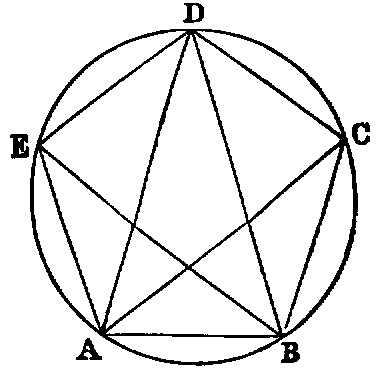
Sol.—Construct an isosceles triangle [x.], having each base angle double the vertical angle, and inscribe in the given circle a triangle ABD equiangular to it. Bisect the angles DAB, ABD by the lines AC, BE. Join EA, ED, DC, CB; then the figure ABCDE is a regular pentagon.
Dem.—Because each of the base angles BAD, ABD is double of the angle ADB, and the lines AC, BE bisect them, the five angles BAC, CAD, ADB, DBE, EBA are all equal; therefore the arcs on which they stand are equal; and therefore the five chords, AB, BC, CD, DE, EA are equal. Hence the figure ABCDE is equilateral.
Again, because the arcs AB, DE are equal, adding the arc BCD to both, the arc ABCD is equal to the arc BCDE, and therefore [III. xxvii.] the angles AED, BAE, which stand on them, are equal. In the same manner it can be proved that all the angles are equal; therefore the figure ABCDE is equiangular. Hence it is a regular pentagon.
Exercises.
1. The figure formed by the five diagonals of a regular pentagon is another regular pentagon.
2. If the alternate sides of a regular pentagon be produced to meet, the five points of meeting form another regular pentagon.
3. Every two consecutive diagonals of a regular pentagon divide each other in extreme and mean ratio.
4. Being given a side of a regular pentagon, construct it.
5. Divide a right angle into five equal parts.
PROP. XII.—Problem.
To describe a regular pentagon about a given circle (ABCDE).
Sol.—Let the five points A, B, C, D, E on the circle be the vertices of any inscribed regular pentagon: at these points draw tangents FG, GH, HI, IJ, JF: the figure FGHIJ is a circumscribed regular pentagon.
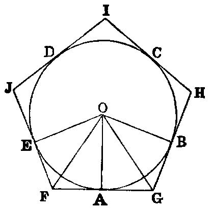
Dem.—Let O be the centre of the circle. Join OE, OA, OB. Now, because the angles A, E of the quadrilateral AOEF are right angles [III. xviii.], the sum of the two remaining angles AOE, AFE is two right angles. In like manner the sum of the angles AOB, AGB is two right angles; therefore the sum of AOE, AFE is equal to the sum of AOB, AGB; but the angles AOE, AOB are equal, because they stand on equal arcs AE, AB [III. xxvii.]. Hence the angle AFE is equal to AGB. In like manner the remaining angles of the figure FGHIJ are equal. Therefore it is equiangular.
Again, join OF, OG. Now the triangles EOF, AOF have the sides AF, FE equal [III. xvii., Ex. 1], and FO common, and the base AO equal to the base EO. Hence the angle AFO is equal to EFO [I. viii.]. Therefore the angle AFO is half the angle AFE. In like manner AGO is half the angle AGB; but AFE has been proved equal to AGB; hence AFO is equal to AGO, and FAO is equal to GAO, each being right, and AO common to the two triangles FAO, GAO; hence [I. xxvi.] the side AF is equal to AG; therefore GF is double AF. In like manner JF is double EF; but AF is equal to EF; hence GF is equal to JF. In like manner the remaining sides are equal; therefore the figure FGHIJ is equilateral, and it has been proved equiangular. Hence it is a regular pentagon.
This Proposition is a particular case of the following general theorem, of which the proof is the same as the foregoing:—
“If tangents be drawn to a circle, at the angular points of an inscribed polygon of any number of sides, they will form a regular polygon of the same number of sides circumscribed to the circle.”
PROP. XIII.—Problem.
To inscribe a circle in a regular pentagon (ABCDE).
Sol.—Bisect two adjacent angles A, B by the lines AO, BO; then O, the point of intersection of the bisectors, is the centre of the required circle.
Dem.—Join CO, and let fall perpendiculars from O on the five sides of the pentagon. Now the triangles ABO, CBO have the side AB equal to BC (hyp.), and BO common, and the angle ABO equal to CBO (const.). Hence the angle BAO is equal to BCO [I. iv.]; but BAO is half BAE (const.). Therefore BCO is half BCD, and therefore CO bisects the angle BCD. In like manner it may be proved that DO bisects the angle D, and EO the angle E.
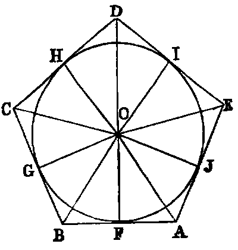
Again, the triangles BOF, BOG have the angle F equal to G, each being right; and OBF equal to OBG, because OB bisects the angle ABC (const.), and OB common; hence [I. xxvi.] OF is equal to OG. In like manner all the perpendiculars from O on the sides of the pentagon are equal; hence the circle whose centre is O, and radius OF, will touch all the sides of the pentagon, and will therefore be inscribed in it.
In the same manner a circle may be inscribed in any regular polygon.
PROP. XIV.—Problem.
To describe a circle about a regular pentagon (ABCDE).
Sol.—Bisect two adjacent angles A, B by the lines AO, BO. Then O, the point of intersection of the bisectors, is the centre of the required circle.
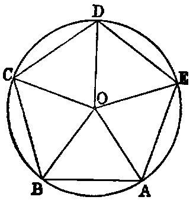
Dem.—Join OC, OD, OE. Then the triangles ABO, CBO have the side AB equal to BC (hyp.), BO common, and the angle ABO equal to CBO (const.). Hence the angle BAO is equal to BCO [I. iv.]; but the angle BAE is equal to BCD (hyp.); and since BAO is half BAE (const.), BCO is half BCD. Hence CO bisects the angle BCD. In like manner it may be proved that DO bisects CDE, and EO the angle DEA. Again, because the angle EAB is equal to ABC, their halves are equal. Hence OAB is equal to OBA; therefore [I. vi.] OA is equal to OB. In like manner the lines OC, OD, OE are equal to one another and to OA. Therefore the circle described with O as centre, and OA as radius, will pass through the points B, C, D, E, and be described about the pentagon.
In the same manner a circle may be described about any regular polygon.
Propositions xiii., xiv. are particular cases of the following theorem:—
“A regular polygon of any number of sides has one circle inscribed in it, and another described about it, and both circles are concentric.”
PROP. XV.—Problem.
In a given circle (ABCDEF) to inscribe a regular hexagon.
Sol.—Take any point A in the circumference, and join it to O, the centre of the given circle; then with A as centre, and AO as radius, describe the circle OBF, intersecting the given circle in the points B, F. Join OB, OF, and produce AO, BO, FO to meet the given circle again in the points D, E, C. Join AB, BC, CD, DE, EF, FA; ABCDEF is the required hexagon.
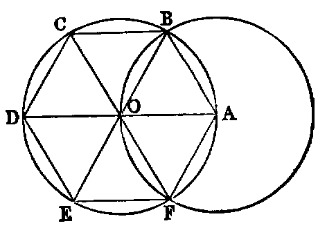
Dem.—Each of the triangles AOB, AOF is equilateral (see Dem., I. i.). Hence the angles AOB, AOF are each one-third of two right angles; therefore EOF is one-third of two right angles. Again, the angles BOC, COD, DOE are [I. xv.] respectively equal to the angles EOF, FOA, AOB. Therefore the six angles at the centre are equal, because each is one-third of two right angles. Therefore the six chords are equal [III. xxix.]. Hence the hexagon is equilateral.
Again, since the arc AF is equal to ED, to each add the arc ABCD; then the whole arc FABCD is equal to ABCDE; therefore the angles DEF, EFA which stand on these arcs are equal [III. xxvii.]. In the same manner it may be shown that the other angles of the hexagon are equal. Hence it is equiangular, and is therefore a regular hexagon inscribed in the circle.
Cor. 1.—The side of a regular hexagon inscribed in a circle is equal to the radius.
Cor. 2.—If three alternate angles of a hexagon be joined, they form an inscribed equilateral triangle.
Exercises.
1. The area of a regular hexagon inscribed in a circle is equal to twice the area of an equilateral triangle inscribed in the circle; and the square of the side of the triangle is three times the square of the side of the hexagon.
2. If the diameter of a circle be produced to C until the produced part is equal to the radius, the two tangents from C and their chord of contact form an equilateral triangle.
3. The area of a regular hexagon inscribed in a circle is half the area of an equilateral triangle, and three-fourths of the area of a regular hexagon circumscribed to the circle.
PROP. XVI.—Problem.
To inscribe a regular polygon of fifteen sides in a given circle.
Sol.—Inscribe a regular pentagon ABCDE in the circle [xi.], and also an equilateral triangle AGH [ii.]. Join CG. CG is a side of the required polygon.
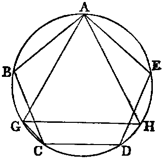
Dem.—Since ABCDE is a regular pentagon, the arc ABC is ths of the circumference; and since AGH is an equilateral triangle, the arc ABG is rd of the circumference. Hence the arc GC, which is the difference between these two arcs, is equal to ths −rd, or
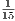
th of the entire circumference; and therefore, if chords equal to GC [i.] be placed round the circle, we shall have a regular polygon of fifteen sides, or quindecagon, inscribed in it.Scholium.—Until the year 1801 no regular polygon could be described by constructions employing the line and circle only, except those discussed in this Book, and those obtained from them by the continued bisection of the arcs of which their sides are the chords; but in that year the celebrated Gauss proved that if 2n + 1 be a prime number, regular polygons of 2n + 1 sides are inscriptable by elementary geometry. For the case n = 4, which is the only figure of this class except the pentagon for which a construction has been given, see Note at the end of this work.
Questions for Examination on Book IV.
1. What is the subject-matter of Book IV.?
2. When is one rectilineal figure said to be inscribed in another?
3. When circumscribed?
4. When is a circle said to be inscribed in a rectilineal figure?
5. When circumscribed about it?
6. What is meant by reciprocal propositions? Ans. In reciprocal propositions, to every line in one there corresponds a point in the other; and, conversely, to every point in one there corresponds a line in the other.
7. Give instances of reciprocal propositions in Book IV.
8. What is a regular polygon?
9. What figures can be inscribed in, and circumscribed about, a circle by means of Book IV.?
10. What regular polygons has Gauss proved to be inscriptable by the line and circle?
11. What is meant by escribed circles?
12. How many circles can be described to touch three lines forming a triangle?
13. What is the centroid of a triangle?
14. What is the orthocentre?
15. What is the circumcentre?
16. What is the polar circle?
17. When is the polar circle imaginary?
18. What is the “nine-points circle”?
19. Why is it so called?
20. Name the special nine points through which it passes.
21. What three regular figures can be used in filling up the space round a point? Ans. Equilateral triangles, squares, and hexagons.
22. If the sides of a triangle be 13, 14, 15, what are the values of the radii of its inscribed and escribed circles?
23. What is the radius of the circumscribed circle?
24. What is the radius of its nine-points circle?
25. What is the distance between the centres of its inscribed and circumscribed circles?
26. If r be the radius of a circle, what is the area of its inscribed equilateral triangle?—of its inscribed square?—its inscribed pentagon?—its inscribed hexagon?—its inscribed octagon?—its inscribed decagon?
27. With the same hypothesis, find the sides of the same regular figures.
Exercises on Book IV.
1. If a circumscribed polygon be regular, the corresponding inscribed polygon is also regular, and conversely.
2. If a circumscribed triangle be isosceles, the corresponding inscribed triangle is isosceles, and conversely.
3. If the two isosceles triangles in Ex. 2 have equal vertical angles, they are both equilateral.
4. Divide an angle of an equilateral triangle into five equal parts.
5. Inscribe a circle in a sector of a given circle.
6. The line DE is parallel to the base BC of the triangle ABC: prove that the circles described about the triangles ABC, ADE touch at A.
7. The diagonals of a cyclic quadrilateral intersect in E: prove that the tangent at E to the circle about the triangle ABE is parallel to CD.
8. Inscribe a regular octagon in a given square.
9. A line of given length slides between two given lines: find the locus of the intersection of perpendiculars from its extremities to the given lines.
10. If the perpendicular to any side of a triangle at its middle point meet the internal and external bisectors of the opposite angle in the points D and E; prove that D, E are points on the circumscribed circle.
11. Through a given point P draw a chord of a circle so that the intercept EF may subtend a given angle X.
12. In a given circle inscribe a triangle having two sides passing through two given points, and the third parallel to a given line.
13. Given four points, no three of which are collinear; describe a circle which shall be equidistant from them.
14. In a given circle inscribe a triangle whose three sides shall pass through three given points.
15. Construct a triangle, being given—
- The radius of the inscribed circle, the vertical angle, and the perpendicular from the vertical angle on the base.
- The base, the sum or difference of the other sides, and the radius of the inscribed circle, or of one of the escribed circles.
- The centres of the escribed circles.
16. If F be the middle point of the base of a triangle, DE the diameter of the circumscribed circle which passes through F, and L the point where a parallel to the base through the vertex meets DE: prove DL.FE is equal to the square of half the sum, and DF.LE equal to the square of half the difference of the two remaining sides.
17. If from any point within a regular polygon of n sides perpendiculars be let fall on the sides, their sum is equal to n times the radius of the inscribed circle.
18. The sum of the perpendiculars let fall from the angular points of a regular polygon of n sides on any line is equal to n times the perpendicular from the centre of the polygon on the same line.
19. If R denotes the radius of the circle circumscribed about a triangle ABC, r, r′, r′′, r′′′ the radii of its inscribed and escribed circles, δ, δ′, δ′′ the perpendiculars from its circumcentre on the sides; μ, μ′, μ′′ the segments of these perpendiculars between the sides and circumference of the circumscribed circle, we have the relations—
| r′ | + | r′′ | + | r′′′ | = 4R + r, | (1) |
|---|---|---|---|---|---|---|
| μ | + | μ′ | + | μ′′ | = 2R − r, | (2) |
| δ | + | δ′ | + | δ′′ | = R + r. | (3) |
The relation (3) supposes that the circumcentre is inside the triangle.
20. Through a point D, taken on the side BC of a triangle ABC, is drawn a transversal EDF, and circles described about the triangles DBF, ECD. The locus of their second point of intersection is a circle.
21. In every quadrilateral circumscribed about a circle, the middle points of its diagonals and the centre of the circle are collinear.
22. Find on a given line a point P, the sum or difference of whose distances from two given points may be given.
23. Find a point such that, if perpendiculars be let fall from it on four given lines, their feet may be collinear.
24. The line joining the orthocentre of a triangle to any point P, in the circumference of its circumscribed circle, is bisected by the line of collinearity of perpendiculars from P on the sides of the triangle.
25. The orthocentres of the four triangles formed by any four lines are collinear.
26. If a semicircle and its diameter be touched by any circle, either internally or externally, twice the rectangle contained by the radius of the semicircle, and the radius of the tangential circle, is equal to the rectangle contained by the segments of any secant to the semicircle, through the point of contact of the diameter and touching circle.
27. If ρ, ρ′ be the radii of two circles, touching each other at the centre of the inscribed circle of a triangle, and each touching the circumscribed circle, prove
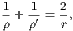
and state and prove corresponding theorems for the escribed circles.
28. If from any point in the circumference of the circle, circumscribed about a regular polygon of n sides, lines be drawn to its angular points, the sum of their squares is equal to 2n times the square of the radius.
29. In the same case, if the lines be drawn from any point in the circumference of the inscribed circle, prove that the sum of their squares is equal to n times the sum of the squares of the radii of the inscribed and the circumscribed circles.
30. State the corresponding theorem for the sum of the squares of the lines drawn from any point in the circumference of any concentric circle.
31. If from any point in the circumference of any concentric circle perpendiculars be let fall on all the sides of any regular polygon, the sum of their squares is constant.
32. For the inscribed circle, the constant is equal to
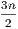
times the square of the radius.33. For the circumscribed circle, the constant is equal to n times the square of the radius of the inscribed circle, together with n times the square of the radius of the circumscribed circle.
34. If the circumference of a circle whose radius is R be divided into seventeen equal parts, and AO be the diameter drawn from one of the points of division (A), and if ρ1, ρ2……ρ8 denote the chords from O to the points of division, A1, A2……A8 on one side of AO, then
Dem.—Let the supplemental chords corresponding to ρ1, ρ2, &c., be denoted by r1, r2, &c.; then [III. xxxv. Ex. 2], we have
| ρ1r1 | = Rr2, | ||||||||||
|---|---|---|---|---|---|---|---|---|---|---|---|
| ρ2r2 | = Rr4, | ||||||||||
| ρ4r4 | = Rr8, | ||||||||||
| ρ8r8 | = Rr1, | ||||||||||
| Hence | ρ1ρ2ρ4ρ8 | = R4. |
And it may be proved in the same manner that
| ρ1ρ2ρ3ρ4ρ5ρ6ρ7ρ8 | = R8. | ||||||||||
|---|---|---|---|---|---|---|---|---|---|---|---|
| Therefore | ρ3ρ5ρ6ρ7 | = R4. |
35. If from the middle point of the line joining any two of four concyclic points a perpendicular be let fall on the line joining the remaining two, the six perpendiculars thus obtained are concurrent.
36. The greater the number of sides of a regular polygon circumscribed about a given circle, the less will be its perimeter.
37. The area of any regular polygon of more than four sides circumscribed about a circle is less than the square of the diameter.
38. Four concyclic points taken three by three determine four triangles, the centres of whose nine-points circles are concyclic.
39. If two sides of a triangle be given in position, and if their included angle be equal to an angle of an equilateral triangle, the locus of the centre of its nine-points circle is a right line.
40. If, in the hypothesis and notation of Ex. 34, α, β denote any two suffixes whose sum is less than 8, and of which α is the greater,
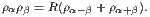
For instance, ρ1ρ4 = R(ρ3 + ρ5) [III. xxxv., Ex. 7].
In the same case, if the suffixes be greater than 8,
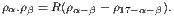
For instance, ρ8ρ2 = R(ρ6 − ρ7) [III. xxxv., Ex. 6].
41. Two lines are given in position: draw a transversal through a given point, forming with the given lines a triangle of given perimeter.
42. Given the vertical angle and perimeter of a triangle, construct it with either of the following data: 1. The bisector of the vertical angle; 2. the perpendicular from the vertical angle on the base; 3. the radius of the inscribed circle.
43. In a given circle inscribe a triangle so that two sides may pass through two given points, and that the third side may be a maximum or a minimum.
44. If s be the semiperimeter of a triangle, r′, r′′, r′′′, the radii of its escribed circles,
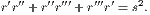
45. The feet of the perpendiculars from the extremities of the base on either bisector of the vertical angle, the middle point of the base, and the foot of the perpendicular from the vertical angle on the base, are concyclic.
46. Given the base of a triangle and the vertical angle; find the locus of the centre of the circle passing through the centres of the escribed circles.
47. The perpendiculars from the centres of the escribed circles of a triangle on the corresponding sides are concurrent.
48. If AB be the diameter of a circle, and PQ any chord cutting AB in O, and if the lines AP, AQ intersect the perpendicular to AB at O, in D and E respectively, the points A, B, D, E are concyclic.
49. If the sides of a triangle be in arithmetical progression, and if R, r be the radii of the circumscribed and inscribed circles; then 6Rr is equal to the rectangle contained by the greatest and least sides.
50. Inscribe in a given circle a triangle having its three sides parallel to three given lines.
51. If the sides AB, BC, &c., of a regular pentagon be bisected in the points A′, B′, C′, D′, E′, and if the two pairs of alternate sides, BC, AE; AB, DE, meet in the points A′′, E′′, respectively, prove
52. In a circle, prove that an equilateral inscribed polygon is regular, and also an equilateral circumscribed polygon, if the number of sides be odd.
53. Prove also that an equiangular circumscribed polygon is regular, and an equiangular inscribed polygon, if the number of sides be odd.
54. The sum of the perpendiculars drawn to the sides of an equiangular polygon from any point inside the figure is constant.
55. Express the sides of a triangle in terms of the radii of its escribed circles.